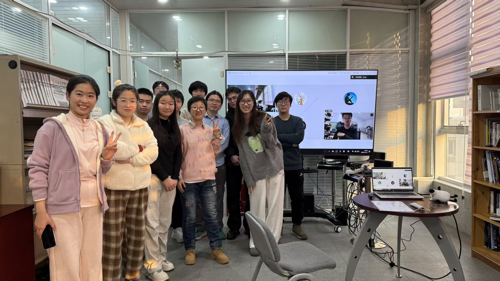
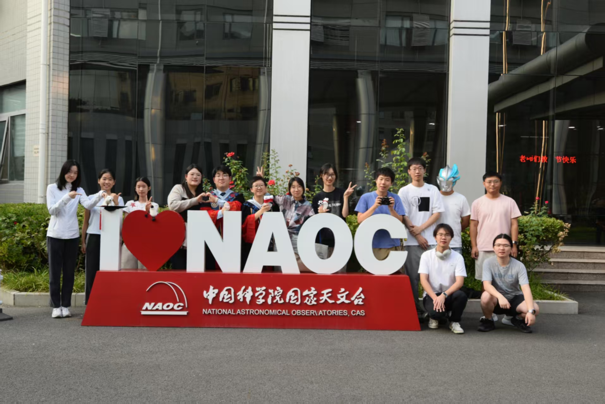

Talks & Awards
Meetings and honors
Talks
- 2026.10.13 PHISCC workshop in PKU/KIAA, The FAST Hundred-Deg2 HI Deep (HD2) Survey: Early Results from the Pilot Survey
- 2026.01.15Student-organized HI unofficial discussion club, A Large Diffuse HI Disk of NHI = 10^{17-18} cm-2 Rotating around M31 and Photoionization Analysis (LOC: me)
- 2025.09.282nd FAST scientific meeting in Pingtang, The FAST Hundred-Deg2 HI Deep (HD2) Survey I. Early Results from the Pilot Survey
- 2025.05.25Guo Shoujing meeting in Changsha, Pilot Survey of the FAST Hundred-Deg2 HI Deep (HD2) Survey I. Early Results from the Extragalactic HI Catalog
- 2024.11.19Annual meeting of the FAST project in PKU/KIAA, A Pilot Survey for the Hundred-deg2 HI Deep (HD2) Survey: Optical Counterparts and Scaling Relations with DESI
- 2023.10.26USTC Journal Club (Online), Low-z HI Extragalactic Surveys of FAST: Observations, Data Reduction and some Early Results
- 2021.11.23HiFAST Tech meeting in Beijing, Introduction of Ripples Removal and RFI Flagging in HiFAST

Honors and Awards
- 2025Zhihu New Knowledge Youth of 2024 (the top honor for a Zhihu user) 2024年度知乎新知答主(知乎用户的最高荣誉)
- 20242nd Astronomy Popular Science Collection Activity, 1st prize (collaborated) 第二届天文科普作品征集活动一等奖(合作文章)
- 2024UCAS Science Fiction and Popular Science Essay Contest, 1st prize (RMB 5,000) for Popular Science and 3rd prize (RMB 1,000) for sci-fiction 国科大科普科幻征文比赛的一等奖和三等奖
- 2023UCAS Science Fiction and Popular Science Essay Contest, excellent prize (RMB 500) 国科大科普科幻征文比赛的优秀奖
- 20221st UCAS Women's Football Tournament, Champion
- 2022UCAS 3 good student
- 2021UCAS graduate scholarship
- 2018–2021JLU First class scholarship
